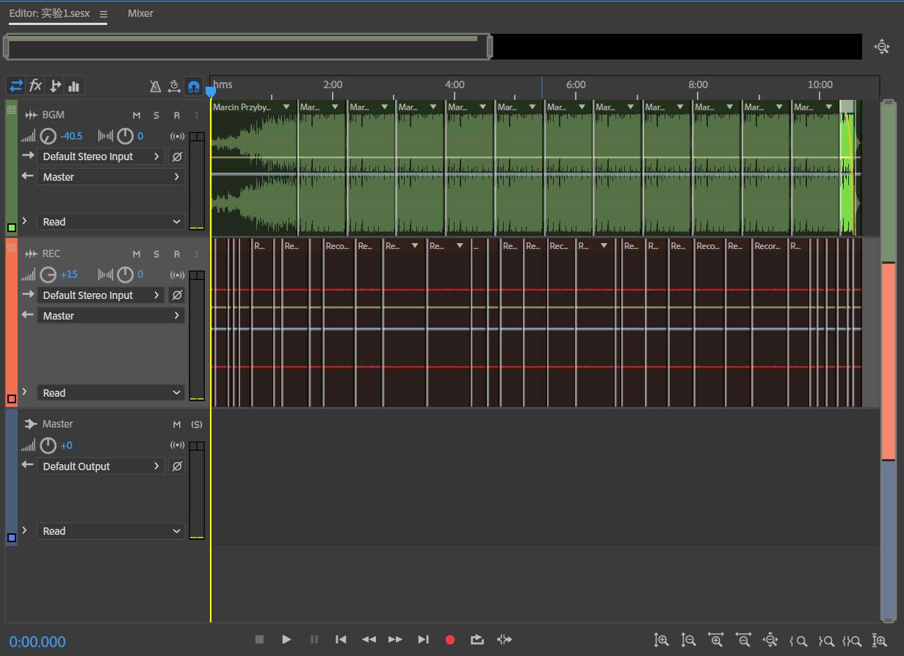

实验一
实验要求：用Windows录音机录制一首自己唱的歌或朗诵，准备一段背景音乐，使用Cool Edit导入录制的声音文件和背景音乐，并进行合成。
录音内容介绍：《白狼崛起》（Ostatnie życzenie, TheLastWish）是由安杰伊·萨普科夫斯基所著的短篇小说集。出版于1993年，出版时间虽晚于另一部短篇小说集《宿命之剑》，但它在整个猎魔人历史的脉络中是位于最前的。其中有数篇小说最先发表在《Fantastyka》杂志或短篇集《猎魔人（Wiedźmin）》中，这些是最早发表的猎魔人故事。 《逐恶而来》（Wiedźmin, The Witcher）是短篇小说集《白狼崛起》的第一篇故事，也是安杰伊·萨普科夫斯基写就的第一篇关于猎魔人利维亚的杰洛特的小说。小说讲述了杰洛特破除吸血妖鸟诅咒的一段传奇故事。